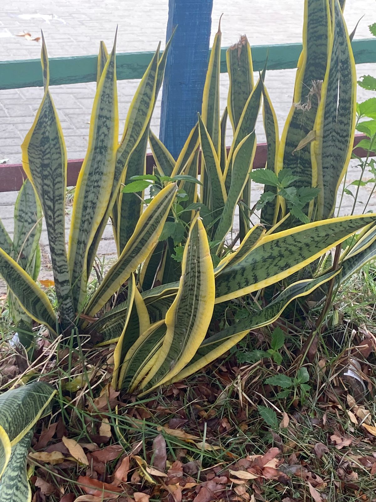

Projeto de Taxonomia das plantas
O projeto envolve nós alunas do CEEP Jose Pacifico de Moura Neto,
em uma pesquisa na nossa escola sobre a taxonomia de algumas plantas encontradas pelo local.
Flor-do-guarujá:
A planta "Flor-do-guarujá", também conhecida como Breynia disticha, possui as seguintes características taxonômicas:
Domínio: Eukaryota
Reino: Plantae
Filó: Magnoliophyta
Classe: Magnoliopsida
Ordem: Malpighiales
Família: Euphorbiaceae
Gênero: Breynia
Espécie: Breynia disticha
Essas características taxonômicas se aplicam à Breynia disticha,
que é amplamente apreciada como planta ornamental devido às suas folhas coloridas e à sua adaptabilidade
para o cultivo em ambientes internos.
Espada-de-São-Jorge:

A Espada-de-São-Jorge é uma planta popularmente conhecida por suas folhas longas e rígidas,
com uma coloração verde-escura. Ela é bastante resistente e fácil de cuidar, sendo uma escolha comum para decoração de interiores.
Domínio: Eukaryota
Reino: Plantae
Filó: Angiospermae
Ordem: Asparagales
Família: Asparagaceae
Gênero: Sansevieria
Espécie: Sansevieria trifasciata
A Espada-de-São-Jorge, ou Sansevieria trifasciata,
é uma planta apreciada não só pela sua beleza, mas também pela sua resistência e facilidade de cultivo.
Palmeiras:
As palmeiras são plantas conhecidas por seu porte majestoso, tronco geralmente não ramificado e folhas grandes em forma de leque ou penacho.
São comumente encontradas em regiões tropicais e subtropicais, sendo apreciadas por sua beleza ornamental e utilidade em diversas culturas.
Domínio: Eukaryota
Reino: Plantae
Filó: Magnoliophyta
Ordem: Arecales
Família: Arecaceae
Gênero: Existem diversos gêneros de palmeiras, como Phoenix, Cocos, Elaeis, entre outros.
Espécie: O nome da espécie varia de acordo com o gênero da palmeira. Por exemplo,
para a espécie Phoenix dactylifera, conhecida como tamareira, o nome da espécie é dactylifera.
Breynia:
A planta Breynia é conhecida por suas características distintas,
que incluem folhas coloridas e pequenas flores. Aqui estão suas características taxonômicas:
Domínio: Eukaryota
Reino: Plantae
Filó: Magnoliophyta
Classe: Magnoliopsida
Ordem: Malpighiales
Família: Euphorbiaceae
Gênero: Breynia
Espécie: Dependendo da espécie específica dentro do gênero Breynia,
poderia ser por exemplo Breynia disticha (espécie comum cultivada como planta ornamental).
Essas são as características taxonômicas gerais da planta Breynia,
que é apreciada em muitos lugares devido à sua folhagem colorida e adaptabilidade como planta de interior.